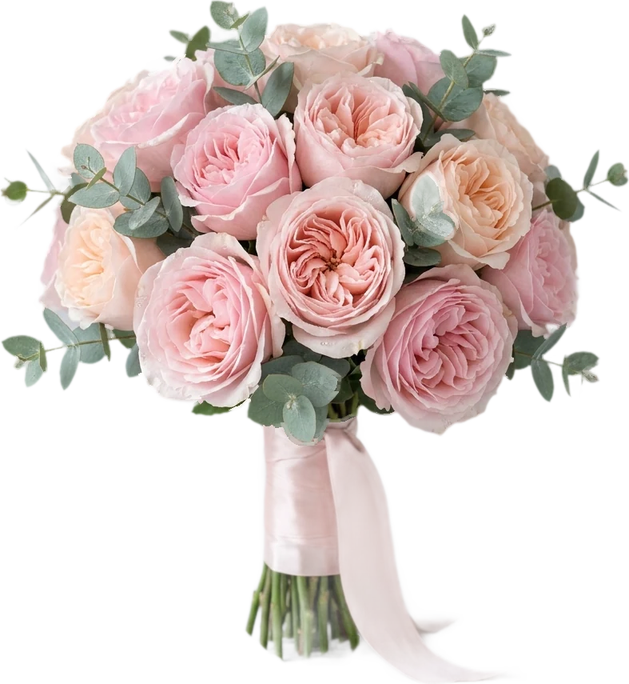
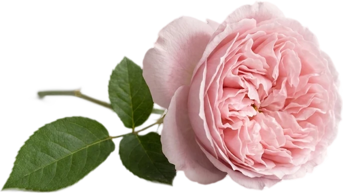
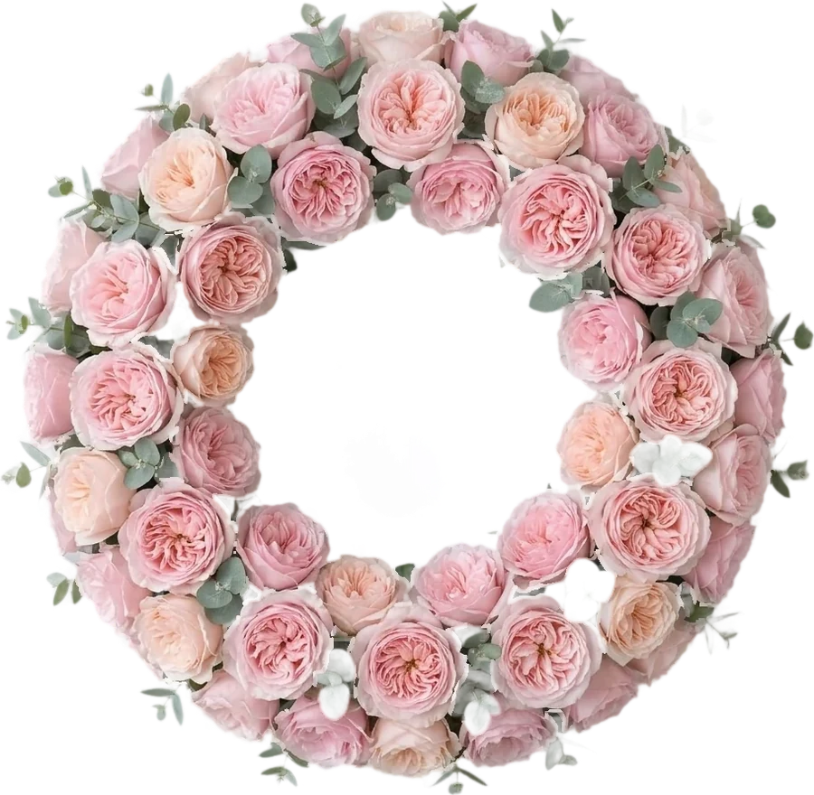
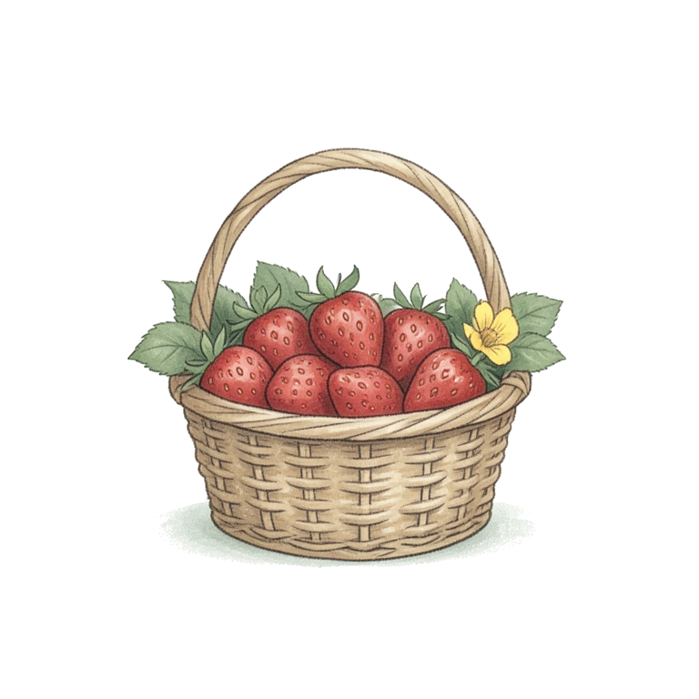

Hạnh phúc là nắm tay nhau
đi qua mọi mùa của cuộc đời

Lễ thành hôn
Trân trọng báo tin lễ thành hôn của con chúng tôi
Nhà trai
Ông Nguyễn Văn Hùng
Bà Trần Thị Mai
Nhà gái
Ông Lê Minh Đức
Bà Phạm Thị Hoa
Chú rể
&Cô dâu

Trân trọng kính mời
Anh Huy & người thương
tới dự bữa tiệc chung vui
cùng gia đình chúng tôi
Hạnh phúc là nắm tay nhau
đi qua mọi mùa của cuộc đời
Tiệc cưới diễn ra vào lúc
17 giờ 30

Thứ Bảy
26
12 · 2026
(Tức ngày 18 tháng 11 năm Bính Ngọ)
Địa điểm
Sảnh Hoàng Kim, 68 Lê Lợi, phường Bến Thành, TP. Hồ Chí Minh
Chỉ đường
Khoảnh khắc
Những ngày bên nhau


“Gặp nhau là duyên, ở bên nhau là phận”
Tháng 12 · 2026
Cùng đếm ngược
Lịch trình
R · S · V · P
Xác nhận tham dự
Mong bạn phản hồi trước ngày 15.12 để gia đình chuẩn bị chu đáo.
Tên của bạn
Lời chúc gửi cô dâu chú rể
Sẽ tham dựRất tiếc không thể
Gửi xác nhận
Mừng cưới

Chạm vào hộp quà để gửi lời chúc

Trân trọng cảm ơn
Đức Minh · Khánh Linh
Sự hiện diện của bạn là niềm hạnh phúc
của gia đình chúng tôi